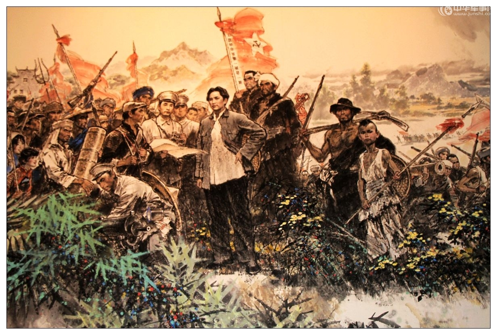
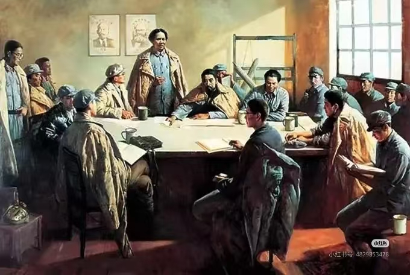
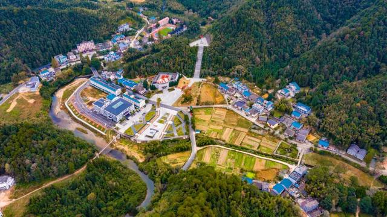

1927年，中国革命处于危急关头。蒋介石和汪精卫先后背叛革命，大肆屠杀共产党员和革命群众，第一次国共合作全面破裂，中国共产党面临着严峻的考验。
1927年9月，毛泽东领导了湘赣边界秋收起义。起义军最初取得了一些胜利，但由于敌强我弱，加上缺乏经验，起义很快遭到了严重挫折。在攻打长沙的计划失败后，毛泽东决定改变战略，向敌人统治力量薄弱的农村进军。

在向井冈山转移的过程中，起义军面临着严重的危机：

1927年9月29日，起义军到达江西省永新县三湾村。这里地理位置偏僻，敌人力量薄弱，适合进行部队改编。毛泽东决定在这里对部队进行全面整顿和改编，以解决部队存在的问题，保存革命力量。

三湾改编是中国共产党建设新型人民军队的重要开端，它为中国革命的胜利奠定了坚实的基础。